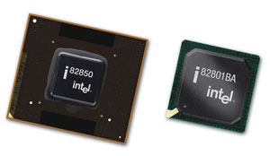
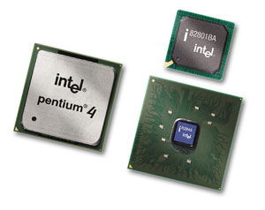
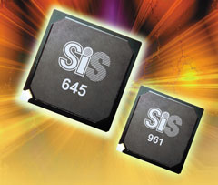
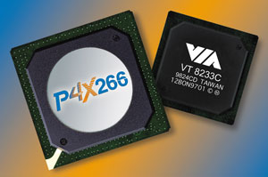
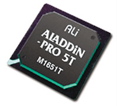
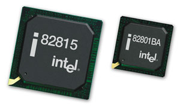
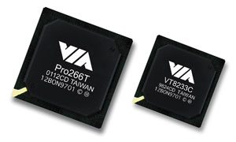

Олег Денисов, Сергей Назаров
За последние полгода-год технологическое развитие рынка наборов микросхем (чипсетов) для ПК диктовалось в основном двумя факторами - активным продвижением DDR-памяти, которую сегодня уже можно отнести к разряду недорогих продуктов массового использования, и появлением новых процессоров.
Так, в секторе устройств для процессоров семейств Intel Pentium III и Intel Celeron первому фактору мы обязаны появлением наборов микросхем для памяти DDR266 ALi ALADDiN-Pro 5, SiS635 и VIA Apollo Pro266. А второму - появлением их модификаций с "приклеенной" на конце буквой "T" (ALi ALADDiN-Pro 5T, SiS635T, VIA Apollo Pro266T) и подновленной линейки SDR-чипсетов Intel 815E/EP/EG B0 Stepping (вместо Intel 815E/EP/EG), в которых добавилась поддержка процессоров на базе ядра Tualatin.
А вот в случае процессоров Intel Pentium 4 дело обстояло немного иначе. Несмотря на то, что за последнее время процессор подвергся двум довольно значительным конструктивным изменениям (появление моделей в малогабаритной упаковке с разъемом Socket 478 и на базе 0,13-мкм ядра Northwood с вдвое увеличенной емкостью L2-кэша - до 512 Кбайт), это не потребовало выпуска новых наборов микросхем. Впрочем, правильнее здесь будет говорить не во множественном, а в единственном числе, потому как долгое время для Intel Pentium 4 существовал только один набор микросхем - Intel 850, работающий в связке с дорогой RDRAM-памятью. И надо сказать, Intel явно не спешила предложить дешевый вариант платформы с Intel Pentium 4 и выпустила свой SDR-чипсет Intel 845 только к осени 2001 года.
В то же самое время VIA запустила в производство VIA Apollo P4X266 - первый набор микросхем для для Intel Pentium 4, работающий с памятью DDR266, а ближе к концу 2001 года - его доработанный вариант VIA Apollo P4X266A. Видя, что ситуация начинает выходить из-под контроля, Intel ничего не оставалось, как выпустить на рынок свой аналогичный набор микросхем - Intel 845D, серийные системные платы на котором были доступны уже в декабре 2001 года. В свою очередь, ALi и SiS были хорошо подготовлены к такому повороту событий и не заставили себя долго ждать, анонсировав DDR333-чипсеты ALi ALADDiN-P4 и SiS645.
Кстати, компанию SiS можно по праву назвать "открытием года" - долгое время не подававшая признаков жизни, она все-таки собралась с силами, выпустила ряд качественных наборов микросхем для современной ПК-платформы и намеревается в ближайшее время занять место среди лидеров этого сектора рынка.
Что же касается перспектив технологического развития наборов микросхем для процессоров Intel, то в ближайшем будущем нас, естественно, ожидает полная поддержка памяти DDR333 SDRAM, а также появление наборов микросхем с поддержкой интерфейсов 8x AGP, Ultra ATA/133, USB 2.0 и системной шины для Intel Pentium 4 с физической (эффективной) тактовой частотой 133 (533) МГц.
Методика и оборудованиеПрограмма, по которой проводились испытания, состояла из двух частей. В первой части быстродействие наборов микросхем измерялось с помощью комплекта стандартных тестовых пакетов, а во второй - при работе с реальными приложениями. Первую часть программы составили тесты из пакетов ZD Business Winstone 2001 1.0.2 и ZD Content Creation Winstone 2002 1.0, предназначенные для измерения общей производительности ПК при работе с популярными программными пакетами; тесты на скорость работы дисковой подсистемы и видеоподсистемы при работе с 2D-графикой из пакета ZD WinBench 99 2.0; 3D-тесты из пакета MadOnion 3DMark2001; тесты на скорость работы центрального процессора и подсистемы оперативной памяти из пакета SiSoft Sandra Standard 2002.1.8.59. Все эти тесты выполнялись при видеорежиме с разрешением 1280 x 1024, глубиной цвета 32 бит и частотой кадровой развертки 75 Гц. Во вторую часть испытаний вошли: тест на скорость выполнения скрипта с набором типичных операций по обработке двумерной графики в среде Adobe Photoshop 6.0.1 (видеорежим с разрешением 1024 x 768, глубиной цвета 32 бит и частотой кадровой развертки 75 Гц); тест на скорость решения нелинейного дифференциального уравнения (исполняемый код генерировался компилятором Compaq Visual Fortran 6.6 под архитектуру x86 с установками по умолчанию); тесты на скорость архивации набора файлов (количество директорий - 241, количество файлов - 1221, суммарный объем файлов - 104.025.546 байт) пакетами WinAce 2.11, WinRAR 2.90 и WinZip 8.1; тест на скорость конвертирования видеоролика формата MPEG-2 (Video Resolution = 720 x 576, Frame Rate = 25 fps, длительность видеоролика - 751 кадр, 18,8 Мбайт) в видеоролик формата MPEG-4 (Video Resolution = 720 x 576, Frame Rate = 25 fps) с помощью пакета Xmpeg 4.2a и кодека DivX 4.12 (1024 x 768, 32 бит, 75 Гц); тест на скорость конвертирования звукового WAV-файла (Format = PCM, Samplerate = 44100, Channels = 2, Bits/Sample = 16, Bytes/Sec = 176400, Length = 0:25:50.04, File size = 273,427,048) в звуковой MP3-файл (MPEG 1.0 Layer 3, 256 Kbit, 44100 Hz, Stereo) с помощью кодека LAME 3.91; и тесты на скорость финального рендеринга 3D-сцен из пакета CineBench 2000 1.0 (1024 x 768, 16 бит, 75 Гц). Все тесты выполнялись под управлением ОС Windows XP Professional Build 2600. Мы также использовали утилиту WCPUID 3.0f для измерения рабочих тактовых частот ядра центрального процессора и системной шины. Сразу же отметим, что, как показали полученные результаты, некоторые тестовые показатели оставались практически постоянными при переходе от одного набора микросхем к другому (разумеется, в рамках одного класса), поэтому мы не будем их комментировать. Однако для справки приведем интервалы их значений. Итак, показатели производительности процессора из группы тестов CPU Arithmetic Benchmark пакета SiSoft Sandra были таковы (соответственно для наборов микросхем под процессоры Intel Pentium 4/Pentium III/Pentium III Tualatin и Intel Celeron/Celeron Tualatin): Dhrystone ALU - 3768-3983/3126-3156, Whetstone FPU - 1041-1055/1522-1536, Whetstone iSSE2 - 2467-2479/нет данных. Показатели тестов из группы CPU Multi-Media Benchmark: Integer - 7940-8026/6181-6238, Floating-Point - 9664-9785/7673-7744. Следующим тестом, невосприимчивым к замене чипсета, оказался WinZip 8.1 (который, кстати, был самым быстрым среди архиваторов) - 0:26-0:29/0:31-0:34 мин:с. Тест на скорость выполнения скрипта в среде Adobe Photoshop 6.0.1 дал такие результаты: 0:98-1:03/1:20-1:30 мин:с. В эту же группу вошли аудиокодек LAME 3.91 (2:05-2:09/2:53-2:55 мин:с) и тест Raytracing (Single CPU) (19,73-19,98/13,43-13,57) из пакета CineBench 2000 1.0. Все остальные результаты тестирования приведены в табл. 1 и 2. Мы использовали следующее стендовое оборудование:
Всего было протестировано 8 наборов микросхем для процессоров Intel Pentium 4 и Intel Pentium III Tualatin/Pentium III/Celeron Tualatin/Celeron. К сожалению, мы не смогли испытать наборы микросхем ALi ALADDiN-P4 и SiS635T по той причине, что в нашем распоряжении не было системных плат на их базе. |
Наборы микросхем для процессоров Intel Pentium 4
Intel 850
Intel Corporation, http://www.intel.com
Набор микросхем Intel 850 имеет концентраторную архитектуру и состоит из трех основных микросхем (концентраторов): Intel 82850 - Memory Controller Hub (MCH), Intel 82801BA - I/O Controller Hub (ICH2) и Intel 82802AB/Intel 82802AC - Firmware Hub (FWH).
|  | Микросхемы Intel 82850 (MCH) и Intel 82801BA (ICH2) из набора микросхем Intel 850.
|
Микросхема Intel 82850 - это головной концентратор набора микросхем Intel 850. В нее встроены контроллер системной шины (физическая тактовая частота шины - 100 МГц, эффективная - 400 МГц), контроллер шины RDRAM-памяти (имеет два канала Direct Rambus, физическая тактовая частота шины - 300/400 МГц, эффективная - 600/800 МГц (2x-режим), максимальный объем RDRAM-памяти - 1 Гбайт при использовании 128 Мбит RDRAM-модулей и 2 Гбайт при использовании 256 Мбит RDRAM-модулей, имеется механизм коррекции ошибок ECC), контроллер AGP-шины (поддерживает одно AGP-устройство и режимы 1x/2x/4x AGP, соответствует спецификации AGP 2.0, включая поддержку режима 4x AGP и протокола 2x/4x Fast Write, уровень напряжения на AGP-шине только 1,5 В), контроллер внутренней шины (Hub Interface) - используется для передачи данных между концентраторами MCH и ICH2. Intel 82850 выполняется в виде 615-контактной OLGA-микросхемы, ее типичная мощность тепловыделения во время работы составляет 6,9 Вт, а максимальная - 8,9 Вт.
Тактирование AGP-шины и шины Hub Interface в чипсете Intel 850 выполняется одним и тем же генератором с частотой в 66 МГц. При этом для тактирования системной шины используется другой генератор; оба они работают асинхронно и независимо друг от друга.
ICH2 - это концентратор подсистемы ввода-вывода. В него встроены контроллер PCI-шины (соответствует спецификации PCI 2.2; ширина шины - 32 бит; поддерживает, помимо самого ICH2, до 6 PCI Bus Master устройств); IDE-контроллер (два Ultra ATA/100 канала - поддержка до четырех IDE-устройств); LAN-контроллер (соответствует спецификации WfM 2.0). Наличие встроенного LAN-контроллера само по себе не означает, что системная плата обязана физически иметь сетевой интерфейс - для этого к LAN-контроллеру нужно еще подключить так называемый PLC-модуль (Platform LAN Connection). К ICH2 может быть подключен один из трех PLC-модулей - Intel 82562EH (после его подключения у системной платы уже физически появляется сетевой 1 Мбит/с HomePNA-интерфейс), Intel 82562ET (физически обеспечивает сетевой 10/100 Мбит/с Ethernet-интерфейс) и Intel 82562EM (физически обеспечивает сетевой 10/100 Мбит/с Ethernet-интерфейс с поддержкой функции Alert On LAN). Все три PLC-модуля на практике могут быть реализованы двояко - либо в виде некоторого набора электронных компонентов, распаянных на системной плате (и тогда последняя действительно имеет интегрированный сетевой интерфейс с внешним физическим разъемом, находящимся рядом с блоком стандартных внешних портов - PS/2 Keyboard/Mouse, USB1/2 и т. д.), либо в виде адаптера, который устанавливается в CNR-слот). Кроме того, в ICH2 встроены два USB-контроллера (UHCI-реализация; каждый контроллер имеет два USB-порта, в сумме - четыре; соответствуют спецификации USB 1.1; поддержка "пробуждения" (wake-up) системы из состояний S1-S4; поддержка Legacy Keyboard/Mouse); контроллер AC'97 (соответствует спецификации AC'97 2.1; имеет интерфейс AC'97 Digital Link, через который может подключаться аудиокодек AC'97, или модемный кодек AC'97, или аудио/модемный кодек AC'97, или одновременно два кодека - аудио AC'97 и модемный AC'97; поддерживает 5 независимых Bus Master устройств - PCM In, PCM Out, Mic Input, Modem In, Modem Out, до 6 выходных PCM-aудиоканалов (полное AC3-декодирование) - передний левый, передний правый, задний левый, задний правый, центральный, сабвуфер, а также wake-up события); контроллер прерываний; LPC-контроллер; Enhanced DMA-контроллер; RTC-контроллер (Real-Time Clock); контроллер SMBus.
ICH2 имеет шину Firmware Hub Interface для соединения с FWH, соответствует спецификации ACPI 1.0 (поддерживаются состояния C1-C2, S3-S5) и поддерживает функции Alert-On-LAN и Alert-On-LAN 2 (при регистрации TCO-события - например, вскрытие системного блока, превышение какого-либо температурного порога, невозможность загрузки процессора - ICH2 посылает по SMBus-шине соответствующее сообщение; это сообщение получает и декодирует LAN-контроллер, который может послать по сети предупреждение сетевому администратору). Выполняется ICH2 в виде 360-контактной EBGA-микросхемы.
FWH - это концентратор интегрированного программного обеспечения (если перевести дословно его полное название - Firmware Hub). Представляет собой микросхему с 4 Мбит (модель Intel 82802AB) или 8 Мбит (модель Intel 82802AC) флэш-памяти, в которой "прошит" BIOS. FWH также содержит генератор случайных чисел (Random Number Generator, для доступа к нему нужно использовать драйвер Intel Security Driver), предназначенный для обеспечения безопасности системы на аппаратном и программном уровне.
Протестированный стенд с набором микросхем Intel 850 был собран на базе системной платы MSI 850 Pro5 (MS-6545). Плата выполняется в форм-факторе ATX и была оснащена процессорным разъемом Socket 478, четырьмя RIMM-слотами с поддержкой до 2 Гбайт памяти, AGP-слотом, четырьмя PCI-слотами, CNR-слотом, четырьмя USB-портами (выпускается также вариант с шестью USB-портами, что нехарактерно для системных плат на этом чипсете) и интегрированной 6-канальной аудиоподсистемой на звуковом контроллере C-Media CMI8738.
Из особенностей MSI 850 Pro5 (MS-6545) также отметим поддержку технологии USB PC-to-PC (позволяет соединить два ПК по USB-интерфейсу), наличие переключателя для повышения напряжения на модулях RDRAM-памяти (2,5, 2,58, 2,68 В), нетрадиционное расположение одного RIMM-слота (поперек платы) и неудобное размещение IDE/FDD-разъемов и разъема питания.
Intel 850 оказался самым быстрым чипсетом для процессоров Intel Pentium 4. Он разделил лидерство в интегральных тестах Business Winstone и Content Creation Winstone с SiS645 в сочетании с DDR333 SDRAM-памятью (этот набор микросхем, кстати, оказался единственным достойным соперником Intel 850), с большим отрывом вышел вперед в тестах на скорость работы оперативной памяти и занял первое место в дисковых тестах, в 3D-тесте на производительность видеоподсистемы и при работе со всеми реальными приложениями. Причиной столь убедительной победы Intel 850 стало, конечно же, его превосходство над другими наборами микросхем по быстродействию оперативной памяти, построенной на модулях RDRAM.
В результате за рекордное быстродействие, продемонстрированное во время испытаний, Intel 850 был отмечен знаком "Выбор редакции BYTE".
Что же касается затрат, то системная плата на наборе микросхем Intel 850 вкупе с RDRAM-памятью будет, конечно, самой дорогой платформой (здесь и далее под платформой мы будем понимать комплект системной платы и 256 Мбайт ОЗУ) для процессора Intel Pentium 4 - ее стоимость с двумя модулями RDRAM-памяти по 128 Мбайт составляет примерно 230 долл. Но если вы хотите "выжать" из Intel Pentium 4 максимум производительности, то такое решение, на наш взгляд, разумно, поскольку в этом случае разница в 30-50 долл. в стоимости ПК по сравнению с другими вариантами становится несущественной.
Intel 845
Intel Corporation, http://www.intel.com
Набор микросхем Intel 845 построен по концентраторной схеме и включает в себя три базовые микросхемы: Intel 82845 - Memory Controller Hub (MCH), Intel 82801BA - I/O Controller Hub (ICH2) и Intel 82802AB/Intel 82802AC - Firmware Hub (FWH).
|  | Микросхемы Intel 82845 (MCH) и Intel 82801BA (ICH2) из набора микросхем Intel 845 с процессором Intel Pentium 4.
|
MCH-микросхема Intel 82845 - это основной концентратор Intel 82845. В нее встроены контроллер системной шины (физическая тактовая частота шины - 100 МГц, эффективная - 400 МГц), контроллер SDR SDRAM-памяти (тактовая частота шины памяти - 133 МГц, синхронизируется с физической тактовой частотой системной шины умножением на коэффициент 4/3; поддерживает до трех Double-Sided Unbuffered DIMM-модулей, до 384 Мбайт (при использовании DIMM-модулей, изготовленных по технологии 64 Мбит)/768 Мбайт (128 Мбит)/1,5 Гбайт (256 Мбит)/3 Гбайт (512 Мбит) SDR SDRAM-памяти; механизм коррекции ошибок ECC), контроллер AGP-шины (поддерживает одно AGP-устройство, соответствует спецификации AGP 2.0, поддерживает 1x/2x/4x-режимы и протокол 2x/4x Fast Write, уровень напряжения на AGP-шине только 1,5 В) и контроллер внутренней шины (Hub Interface) - используется для передачи данных между MCH- и ICH2. Intel 82845 выполняется в виде 593-контактной FC-BGA-микросхемы, ее максимальная мощность тепловыделения во время работы составляет 4,9 Вт.
AGP-шина и шина Hub Interface тактируются одним и тем же генератором с частотой в 66 МГц, тактирование же системной шины выполняется другим генератором, который работает асинхронно с первым и независимо от него.
ICH2-микросхема Intel 82801BA - это концентратор подсистемы ввода-вывода, в который встроены контроллер PCI-шины, IDE-контроллер, два двухпортовых USB-контроллера, контроллер AC'97, LAN-контроллер и ряд других (более полную информацию можно найти в описании набора микросхем Intel 850).
FWH - это концентратор, в котором "прошит" BIOS и содержится генератор случайных чисел (более подробная информация приводится в описании набора микросхем Intel 850).
Для испытаний Intel 845 мы использовали стенд, собранный на базе системной платы ASUS P4B форм-фактора ATX, на PCB которой были размещены процессорный разъем Socket 478, три DIMM-слота для модулей памяти (поддерживается до 3 Гбайт Unbuffered PC100/PC133 SDRAM-памяти, с ECC или без нее), AGP-слот, шесть PCI-слотов, CNR-слот, четыре USB-порта и звуковая подсистема на AC'97 аудиокодеке с поддержкой SPDIF-выхода. Среди особенностей этой платы - наличие защелки для закрепления AGP-платы, разъема для подключения индикационной панели ASUS iPanel, разъема для подключения Secure Digital/Memory Stick Card Reader, разъема для подключения Smart Card Reader, блока DIP-переключателей для установки коэффициента умножения тактовой частоты процессора и частот системной/AGP/PCI-шины и джампера для установки уровня напряжения на модулях памяти (3,4, 3,5, 3,6 В).
В тестировании Intel 845 заметно проиграл всем остальным чипсетам. В тестах на скорость работы ОЗУ он сильно отстал от своих конкурентов, в интегральном тесте Business Winstone занял предпоследнее место, а в интегральном тесте Content Creation Winstone и в 3D-тесте 3DMark2001 3DMark Score был последним. Не лучше обстояло дело и в тестах на скорость работы с реальными приложениями: там он тоже оказался самым медленным.
Что же послужило причиной таких низких результатов? Ответ очевиден - недостаточная пропускная способность шины DRAM-памяти, о чем свидетельствует в первую очередь значительное отставание в тестах на скорость работы ОЗУ. Как следствие - снижение скорости работы с 3D-приложениями и общей вычислительной мощности системы. Фактически Intel 845 очень хорошо иллюстрирует то, к чему приводит сильный дисбаланс между пропускной способностью системной шины (3,2 Гбайт/с) и шины DRAM-памяти (1,066 Гбайт/с).
Ценовые характеристики Intel 845 также не оправдывают его весьма скромной производительности, поскольку платформа с 256 Мбайт памяти на его базе всего лишь на 10 долл. дешевле, чем, например, более быстрая на Intel 845D с DDR SDRAM-памятью. Что ж, напрашивается очевидный вывод - построение ПК на базе Intel 845 с SDR SDRAM-памятью не имеет смысла, и весьма вероятно, что в скором времени этот набор микросхем будет снят с производства, уступив место Intel 845D в сочетании с DDR SDRAM-памятью.
Intel 845D (Intel 845 B0 Stepping)
Intel Corporation, http://www.intel.com
По сути Intel 845D - это DDR-модификация набора микросхем Intel 845 и отличается от последнего тем, что в качестве MCH-концентратора вместо микросхемы Intel 82845 используется Intel 82845 B0 Stepping. Разница между ними в том, что в Intel 82845 B0 Stepping добавлен встроенный контроллер DDR SDRAM-памяти со следующими характеристиками: физическая тактовая частота шины памяти - 100/133 МГц, синхронизируется с физической тактовой частотой системной шины умножением соответственно на коэффициент 1/1 и 4/3; эффективная тактовая частота шины памяти соответственно - 200/266 МГц (2x-режим); поддерживает до двух Double-Sided и/или Single-Sided Unbuffered DIMM-модулей (но не поддерживает Double-Sided DIMM-модули с x16 линиями ввода-вывода (!); до 256 Мбайт (при использовании DIMM-модулей, изготовленных по технологии 64 Мбит)/512 Мбайт (128 Мбит)/1 Гбайт (256 Мбит)/2 Гбайт (512 Мбит) DDR SDRAM-памяти; есть механизм коррекции ошибок ECC. Во всем же остальном функциональность микросхем Intel 82845 и Intel 82845 B0 Stepping (а значит, и наборов микросхем Intel 845 и Intel 845D) идентична.
Выполняется Intel 82845 B0 Stepping в виде 593-контактной FC-BGA-микросхемы, а ее максимальная мощность тепловыделения во время работы составляет 5,8 Вт.
Для тестирования мы использовали машину, построенную на системной плате Gigabyte GA-8IRX форм-фактора ATX. Она была оснащена процессорным разъемом Socket 478, тремя DDR DIMM-слотами (поддерживается до 4 банков Unbuffered DDR200/DDR266 SDRAM-памяти с общим объемом до 2 Гбайт), AGP-слотом, шестью PCI-слотами, CNR-слотом, четырьмя USB-портами, разъемом для подключения Smart Card Reader и интегрированной аудиоподсистемой на звуковом контроллере Creative CT5880. Из особенностей Gigabyte GA-8IRX отметим поддержку технологии Dual BIOS (резервирование и восстановление кода BIOS) и возможность установки повышенного напряжения на модулях памяти (DDR OverVoltage) и на AGP-шине (AGP OverVoltage).
Во всех тестах Intel 845D стабильно показывал результаты, характерные для наборов микросхем под процессоры Intel Pentium 4, работающих в связке с DDR266 SDRAM-памятью, и, в зависимости от теста, немного обгонял своих прямых конкурентов SiS645 и VIA Apollo P4X266A (также в сочетании с DDR266 SDRAM-памятью) или же отставал от них. Правда, показатель High-End Disk WinMark (17400) стал исключением из этого правила и по непонятным причинам оказался самым низким среди наборов микросхем для Intel Pentium 4.
Отметим также, что система на базе Intel 845D отработала без сбоев всю программу испытаний, и это дает основание рекомендовать его для построения надежных ПК с процессором Intel Pentium 4 и памятью DDR SDRAM.
Однако у Intel 845D есть один недостаток - довольно высокая цена (для платформы с 256 Мбайт памяти - 215 долл.) по сравнению с конкурирующими DDR-наборами микросхем SiS645 (180 долл.) и VIA Apollo P4X266A (195 долл.). Впрочем, эта разница в цене вряд ли остановит пользователей, предпочитающих иметь ПК с набором микросхем и процессором от одного производителя. Правда, в этом случае, на наш взгляд, выгоднее остановиться на системе с Intel 850 и RDRAM-памятью, поскольку она работает быстрее, а стоит всего лишь на 15 долл. больше.
SiS645
Silicon Integrated Systems Corporation, http://www.sis.com
Набор микросхем SiS645 построен на основе двух микросхем - северного моста SiS645 и южного моста SiS961.
|  | Микросхемы SiS645 и SiS961 из набора микросхем SiS645.
|
В микросхему SiS645 встроены контроллер системной шины (физическая тактовая частота шины - 100 МГц, эффективная - 400 МГц), контроллер шины SDRAM-памяти (поддерживает память PC133 SDR SDRAM, DDR266 DDR SDRAM (до 6 банков, до 3 Гбайт) и DDR333 DDR SDRAM (до 4 банков, до 2 Гбайт); до трех Unbuffered DIMM-модулей памяти; нет механизма ECC) и контроллер AGP-шины (соответствует спецификации AGP 2.0, поддерживает режимы 1x/2x/4x AGP и протокол Fast Write).
В микросхему SiS961 встроены контроллер PCI-шины (соответствует спецификации PCI 2.2, поддерживает до 6 устройств PCI Bus Master), IDE-контроллер (два канала Ultra ATA/100 с поддержкой до четырех IDE-устройств), LAN MAC-контроллер (для реализации LAN-интерфейса на системной плате нужно еще дополнительно распаять PHY-микросхему (Physical Layer Chip), которая обменивается данными с LAN MAC-контроллером через MII-интерфейс, после чего на системной плате физически появляется встроенный сетевой 1/10 Мбит/с HomePNA- или 10/100 Мбит/с Ethernet-интерфейс; помимо этого, LAN-интерфейс может быть физически реализован в виде ACR-адаптера, на котором распаяна PHY-микросхема), два OpenHCI-совместимых USB-контроллера (каждый имеет по три USB-порта), 6-канальный AC'97 контроллер (соответствует спецификации AC'97 2.2), контроллер клавиатуры/PS2-мыши, PCI-LPC-мост (используется для подключения LPC-контроллера), RTC-контроллер, два DMA-контроллера (8237A-совместимые) и два контроллера прерываний (8259A-совместимые).
Южный мост SiS961 соответствует спецификациям ACPI 1.0b, APM 1.2, PCI Bus Power Management 1.1 и, согласно им, поддерживает ряд режимов энергосбережения. Кроме того, SiS961 поддерживает технологию Intel SpeedStep и технологию энергосбережения у процессоров AMD.
Данные между северным и южным мостом передаются по специальному внутреннему интерфейсу, разработанному компанией SiS и получившему название Multi-Threaded I/O Link (MuTIOL). По организации и логике работы этот интерфейс превосходит свои аналоги, например, Hub Interface от Intel и V-Link от VIA, и вот почему. Во-первых, каждому контроллеру, встроенному в южный мост, выделяется канал с постоянной пропускной способностью для обмена данными с северным мостом, который используется для передачи данных только между этим контроллером и северным мостом и больше ни для чего! Такое решение минимизирует задержки при обмене информацией между северным и южным мостом в том случае, когда она передается одновременно в несколько логически независимых друг от друга потоков данных. Во-вторых, данные от северного моста к южному (downstream transfer) и, наоборот, от южного к северному (upstream transfer) передаются параллельно и независимо друг от друга, каждый поток - по своей половинке шины (поэтому интерфейс MuTIOL называют двунаправленным - bi-directional), и это позволяет увеличить пропускную способность интерфейса. Каждая из двух половинок интерфейса MuTIOL имеет ширину в 8 бит, физически тактируется частотой в 133 МГц, работает в 2x-режиме, вследствие чего эффективная тактовая частота составляет 266 МГц, и имеет максимальную пропускную способность в 266 Мбайт/с. А в сумме максимальная пропускная способность интерфейса MuTIOL составляет 533 Мбайт/с при общей ширине шины в 16 бит.
При подготовке этого обзора мы испытали машину с чипсетом SiS645, собранную на системной плате MSI 645 Ultra (MS-6547) форм-фактора ATX. На PCB этой платы были размещены процессорный разъем Socket 478, три DIMM-слота для модулей памяти (поддерживается до 6 банков памяти DDR200/DDR266/DDR333 SDRAM общим объемом до 3 Гбайт), AGP-слот, пять PCI-слотов и CNR-слот. MSI 645 Ultra (MS-6547) была также оснащена четырьмя USB-портами и интегрированной звуковой подсистемой на AC'97 аудиокодеке Realtek ALC201A. Плата имеет неплохие возможности для разгона системы - с помощью программы настройки BIOS пользователь может вручную контролировать тактовую частоту системной шины и шины памяти и напряжение на ядре процессора.
SiS645 был единственным протестированным набором микросхем для процессоров Intel Pentium 4, который поддерживал память DDR333 SDRAM. Сочетание с ней обеспечило ему существенное преимущество во всех тестах на производительность по сравнению с наборами микросхем Intel 845D и VIA Apollo P4X266A (кроме теста 3DMark2001), работавшими в связке с DDR266 SDRAM-памятью. Более того, SiS645 успешно конкурировал с RDRAM-чипсетом Intel 850 и по производительности занял второе место среди наборов микросхем для процессоров Intel Pentium 4.
Правда, мы заметили у SiS645 один недостаток - заниженный (не столь высокий, как можно было бы ожидать) результат в 3D-тесте 3DMark2001 на производительность видеоподсистемы, что, вероятно, вызвано использованием AGP-драйверов, недостаточно хорошо оптимизированных под ОС Microsoft Windows XP.
В дополнение к этому SiS645 имеет отличные ценовые характеристики - примерная стоимость платформы с 256 Мбайт DDR333 SDRAM-памяти составляла 205 долл., что дешевле аналогичной на базе Intel 850 (230 долл.). Причем разрыв в стоимости между ними должен увеличиться по мере того, как будут опускаться цены на память DDR333 SDRAM. И в этом случае покупка ПК на базе SiS645 с DDR333 SDRAM-памятью будет значительно выгоднее, чем ПК на базе Intel 850 с RDRAM-памятью. Вот почему мы отметили SiS645 знаком "Выбор редакции BYTE" как самый перспективный чипсет для процессоров Intel Pentium 4.
VIA Apollo P4X266/P4X266A
VIA Technologies, Inc., http://www.via.com.tw
Набор микросхем VIA Apollo P4X266 строится на базе двух микросхем - северного моста VIA VT8753 (664-контактная BGA-микросхема) и южного моста VIA VT8233 или VIA VT8233C (оба выполняются в виде 376-контактной BGA-микросхемы), соединенных между собой внутренним интерфейсом V-Link (пропускная способность - 266 Мбайт/с).
|  | Микросхемы VIA VT8753 и VIA VT8233C из набора микросхем VIA Apollo P4X266.
|
В микросхему VIA VT8753 встроены контроллер системной шины (физическая тактовая частота шины - 100 МГц, эффективная - 400 МГц), контроллер SDR/DDR SDRAM-памяти (поддерживает SDRAM-память типа VCM, PC100/PC133 и DDR200/DDR266 SDRAM; до 4 Гбайт памяти, есть механизм ECC) и контроллер AGP-шины (поддерживает режимы 2x и 4x AGP).
В микросхему VIA VT8233/VT8233C встроены контроллер PCI-шины (поддерживает до 6 PCI-устройств), EIDE-контроллер (до 4 EIDE-устройств с интерфейсом Ultra ATA 33/66/100), 3 USB-контроллера (6 UHCI-совместимых USB-портов), LAN MAC-контроллер, 6-канальный AC'97 контроллер, контроллер клавиатуры/PS2-мыши, SMBus-контроллер, RTC-контроллер, LPC-контроллер, APIC-контроллер и контроллер подсистемы мониторинга состояния (более полную информацию можно найти в описании набора микросхем VIA Apollo Pro266T).
VIA Apollo P4X266A - это более поздняя модификация набора микросхем VIA Apollo P4X266 и отличается в первую очередь тем, что северный мост у него построен на VIA VT8753A (664-контактная BGA-микросхема), в которой, по сравнению с VIA VT8753, улучшены контроллеры системной шины (повышена эффективность логики работы этого контроллера, что уменьшает задержки при обмене данными между центральным процессором и остальными компонентами системы; добавлена поддержка физической/эффективной тактовой частоты системной шины в 133/533 МГц с расчетом на будущие модели процессора Intel Pentium 4) и шины памяти (увеличена скорость обмена данными с DDR SDRAM-памятью). В остальном северные мосты наборов микросхем VIA Apollo P4X266 и P4X266A одинаковы.
Что же касается южного моста, то в качестве такового в наборе микросхем VIA Apollo P4X266A могут использоваться не только VIA VT8233 и VIA VT8233C, как в VIA Apollo P4X266 (полное описание этих микросхем приводится в описании VIA Apollo Pro266T), но и VIA VT8233A (376-контактная BGA-микросхема), в которой добавлена поддержка IDE-интерфейса Ultra ATA/133, число встроенных USB-контроллеров сокращено до двух (соответственно, число поддерживаемых USB-портов уменьшено до четырех) и нет встроенного LAN MAC-контроллера. А в остальном все три микросхемы имеют одинаковую функциональность.
Как и в VIA Apollo P4X266, северный и южный мосты связываются с помощью внутреннего интерфейса V-Link (максимальная пропускная способность - 266 Мбайт/с).
Тестировавшаяся нами система с набором микросхем VIA Apollo P4X266A была построена на основе материнской платы Soltek SL-85DRV3 форм-фактора ATX, оснащенной процессорным разъемом Socket 478, тремя DIMM-слотами (до 1,5 Гбайт Unbuffered или до 3 Гбайт Registered DDR200/DDR266 SDRAM-памяти), AGP-слотом, шестью PCI-слотами, CNR-слотом, четырьмя USB-портами и интегрированным AC'97 аудиокодеком. Южный мост у Soltek SL-85DRV3 был выполнен на микросхеме VIA VT8233A, благодаря чему плата поддерживала IDE-интерфейс Ultra ATA/133.
Большинство показателей VIA Apollo P4X266A, полученных с помощью тестовых пакетов, равно как и все результаты в реальных приложениях, были на уровне, характерном для чипсетов, работающих с DDR266 SDRAM-памятью. А в тесте 3DMark2001 этот набор микросхем обогнал соперничавших с ним Intel 845D и VIA Apollo P4X266A.
Однако не все было так хорошо, как хотелось бы: по показателям Business Winstone и Business Disk WinMark набор микросхем VIA Apollo P4X266A заметно отстал от конкурентов. Скорее всего, это было вызвано тем, что последняя версия IDE-драйверов от VIA, доступная на момент проведения испытаний, недостаточно оптимизирована для работы под управлением ОС Windows XP.
Что же касается ценовых характеристик, то здесь VIA Apollo P4X266A выглядит достаточно привлекательно и по стоимости платформы с 256 Мбайт памяти (195 долл.) уступает только SiS645 (180 долл. в сочетании с DDR266 SDRAM-памятью). Правда, не нужно забывать, что судьба VIA Apollo P4X266A все еще остается неопределенной, поскольку VIA до сих пор не получила официальной лицензии от Intel на производство наборов микросхем для процессоров Intel Pentium 4.
Наборы микросхем для процессоров Intel Pentium III/Pentium III Tualatin и Intel Celeron/Celeron Tualatin
ALi ALADDiN-Pro 5T
Acer Laboratories Inc., http://www.ali.com.tw
Набор микросхем ALi ALADDiN-Pro 5T поддерживает один процессор и строится на основе двух микросхем - северного моста ALi M1651T и южного моста ALi M1535D+ или ALi M1535+ (детальную информацию по этим двум микросхемам можно найти в описании набора микросхем ALi ALADDiN-P4).
|  | Микросхема ALi M1651T, выполняющая роль северного моста в наборе микросхем ALi ALADDiN-Pro 5T.
|
В ALi ALADDiN-Pro 5T используется старая мостовая архитектура - его северный и южный мосты соединяются низкоскоростной PCI-шиной с пропускной способностью в 133 Мбайт/с (ширина шины - 32 бит, тактовая частота - 33 МГц), и по этой причине по производительности работы с высокоскоростными устройствами ввода-вывода он проигрывает наборам микросхем с более современной концентраторной архитектурой.
В микросхему ALi M1651T встроены контроллер системной шины (физическая тактовая частота шины - 100/133 МГц), контроллер SDR/DDR SDRAM-памяти (поддерживает память PC66/PC100/PC133 SDR SDRAM и DDR133/DDR200/DDR266 DDR SDRAM; DIMM-модули SDR/DDR SDRAM, изготовленные по технологии 4, 16, 64, 128, 256 и 512 Мбит максимальным суммарным объемом до 3 Гбайт), контроллер AGP-шины (соответствует спецификации AGP 2.0, поддерживает режимы 1x/2x/4x AGP) и контроллер PCI-шины (соответствует стандарту PCI 2.2 и, помимо самого северного моста ALi M1651T и моста PCI-ISA, поддерживает до 6 устройств PCI Bus Master). Изготавливается ALi M1651T в виде 528-контактной BGA-микросхемы.
Для испытаний мы использовали ПК на базе системной платы ASUS TUA266 форм-фактора ATX. На ней были размещены процессорный разъем Socket 370 (поддерживаются процессоры Intel Pentium III/Pentium III Tualatin и Intel Celeron/Celeron Tualatin), два DDR DIMM-слота памяти (до 2 Гбайт DDR200/DDR266 SDRAM-памяти) и три SDR DIMM-слота памяти (до 3 Гбайт PC100/PC133 SDRAM-памяти), слот AGP Pro, пять PCI-слотов, AMR-слот, четыре USB-порта и интегрированный звуковой контроллер C-Media CMI8738. К особенностям этой платы следует отнести возможность подключения индикационной панели ASUS iPanel и наличие на ней джампера для повышения напряжения на модулях DDR SDRAM-памяти (2,5, 2,6 В).
Интересно отметить, что замена памяти PC133 SDRAM на более быструю DDR266 SDRAM привела лишь к небольшому приросту производительности в тестах на скорость работы ОЗУ, в интегральном тесте Content Creation Winstone, в тестах на скорость решения нелинейного дифференциального уравнения и конвертирования MPEG-2 видеоролика (25,37), а также в тестах Shading (CINEMA 4D)/(OpenGL) из пакета CineBench 2000. При этом скорость архивации программой WinAce/WinRAR осталась той же, а интегральный показатель Business Winstone и скорости работы видеоподсистемы и дисковой подсистемы заметно уменьшились. В итоге общая производительность ALi ALADDiN-Pro 5T в сочетании с PC133 SDRAM-памятью оказалась выше (!), чем с DDR266, но также оставляла желать лучшего, поскольку и в этом случае он существенно отставал от конкурировавших с ним Intel 815E B0 Stepping и VIA Apollo Pro266T.
Впрочем, у ALi ALADDiN-Pro 5T, используемого в связке с PC133 SDRAM-памятью, есть неоспоримое преимущество - выигрыш в цене ПК в 20-30 долл. по сравнению с конкурентами. А потому он хорошо подойдет для построения бюджетного ПК, предназначенного для работы с приложениями, нетребовательными к мощности системы.
Intel 815E/EP/EG B0 Stepping
Intel Corporation, http://www.intel.com
Набор микросхем Intel 815E B0 Stepping имеет концентраторную архитектуру и состоит из трех основных микросхем: Intel 82815 B0 Stepping - Graphics Memory Controller Hub (GMCH), Intel 82801BA - I/O Controller Hub (ICH2) и Intel 82802AB/AC - Firmware Hub (FWH).
Следует сразу же подчеркнуть, что ряд системных плат, построенных на наборах микросхем Intel 815E/EP/EG B0 Stepping, поддерживает процессоры не только от Intel, но и линейку VIA C3.
|  | Микросхемы Intel 82815 B0 Stepping (GMCH) и Intel 82801BA (ICH2) из набора микросхем Intel 815E.
|
GMCH-микросхема Intel 82815 B0 Stepping - это головной концентратор набора Intel 815E B0 Stepping. В него встроены контроллер системной шины (физическая тактовая частота шины - 66/100/133 МГц), контроллер SDR SDRAM-памяти (тактовая частота шины памяти - 100/133 МГц; при частоте FSB в 66 МГц тактовая частота шины памяти устанавливается только на 100 МГц, при частоте FSB в 100 МГц - только на 100 МГц, при частоте FSB в 133 МГц - на 100/133 МГц; при тактовой частоте шины памяти в 100 МГц поддерживается до трех Double-Sided DIMM-модулей; при 133 МГц - до двух Double-Sided DIMM-модулей или трех Single-Sided DIMM-модулей; DIMM-модули с напряжением питания только в 3,3 В; поддерживаются только Unbuffered Non-ECC DIMM-модули и не поддерживаются Registered DIMM; при использовании 64 Мбит DIMM-модулей поддерживает от 32 до 256 Мбайт памяти, 128/256 Мбит DIMM-модулей - до 512 Мбайт памяти; обеспечивает поддержку функции Suspend-to-RAM); контроллер AGP-шины (поддерживает одно устройство AGP 1x/2x/4x - либо встроенный в GMCH графический контроллер, либо установленный в AGP-гнездо на системной плате графический адаптер; поддерживает универсальный AGP-слот (AGP Universal Connector), обеспечивая при этом обмен данными с установленной в него платой в соответствии со спецификацией AGP 2.0 при уровне напряжения в 3,3 В (для режимов 1x/2x AGP) или 1,5 В (для режимов 1x/2x/4x AGP); AGP-интерфейс соответствует спецификации AGP 2.0, включая поддержку режима 4x AGP, но не поддерживает протокол 2x/4x Fast Write; физическая тактовая частота шины - 66 МГц, синхронизируется с тактовой частотой системной шины умножением на коэффициент 1/1 (66 МГц FSB), 2/3 (100 МГц FSB) или 1/2 (133 МГц FSB); графический контроллер (графический 3D-ускоритель с аппаратной поддержкой билинейной/трилинейной/анизотропной фильтрации при работе с 3D-графикой и алгоритмов motion compensation при MPEG/DVD-декодировании; имеет встроенный 230-мегагерцевый ЦАП; оснащен интерфейсом Digital Video Out, который можно использовать для вывода изображения на цифровой монитор и TV-приемник); контроллер локальной видеопамяти (в документации может называться Local Graphics Memory Controller или Display Cache; частота шины видеопамяти - 133 МГц и остается всегда постоянной независимо от тактовой частоты системной шины; ширина шины видеопамяти - 32 бит; поддерживает SDR SDRAM-память с напряжением питания только в 3,3 В, которая реализуется в виде GPA-платы (Graphics Performance Accelerator) емкостью 4 Мбайт, устанавливаемой в AGP-гнездо на системной плате; если эта плата не установлена, то локальная видеопамять как таковая отсутствует и ее объем равен 0 Мбайт; локальная видеопамять используется в основном как Z-буфер при работе с 3D-графикой); контроллер внутренней шины (Hub Interface) - используется для передачи данных между GMCH- и ICH2-концентраторами. Intel 82815 B0 Stepping изготавливается в виде 544-контактной BGA-микросхемы, максимальная мощность тепловыделения во время работы составляет 5,1 Вт.
ICH2-микросхема Intel 82801BA - это концентратор подсистемы ввода-вывода, в который встроены контроллер PCI-шины, IDE-контроллер, два двухпортовых USB-контроллера, контроллер AC'97, LAN-контроллер и ряд других (более полную информацию можно найти в описании чипсета Intel 850).
FWH - это концентратор, в котором "прошит" BIOS и содержится генератор случайных чисел (более подробная информация приводится в описании чипсета Intel 850).
Что же касается набора микросхем Intel 815EP B0 Stepping, то он отличается от Intel 815E B0 Stepping тем, что в нем вместо GMCH (микросхемы Intel 82815 B0 Stepping) используется MCH (микросхема Intel 82815EP B0 Stepping), т. е. В Intel 82815EP B0 Stepping нет встроенного графического контроллера и контроллера локальной видеопамяти (следовательно, системные платы, построенные на базе набора микросхем Intel 815EP B0 Stepping, не имеют встроенной видеоподсистемы), а есть только AGP-контроллер, который позволяет установить видеоадаптер в AGP-гнездо на системной плате.
В свою очередь, в наборе микросхем Intel 815EG B0 Stepping, в отличие от Intel 815E B0 Stepping, вместо микросхемы Intel 82815 B0 Stepping используется Intel 82815EG B0 Stepping. Разница между ними заключается в том, что в последней нет встроенного AGP-контроллера, но есть встроенный графический контроллер и контроллер локальной видеопамяти. Таким образом, системные платы, построенные на базе набора микросхем Intel 82815EG B0 Stepping, имеют встроенную графическую подсистему и AGP-гнездо, однако в него можно установить только GPA-плату (но не обыкновенный AGP-видеоадаптер) с локальной видеопамятью. Более того, системные платы на наборе микросхем Intel 815EG B0 Stepping могу вообще не иметь AGP-гнезда - соответственно, в них нельзя дополнительно установить GPA-плату с локальной видеопамятью.
Мы провели испытание стенда на базе набора микросхем Intel 815EP B0 Stepping, оснащенного системной платой ASUS TUSL2-C. На PCB этой платы были распаяны процессорный разъем Socket 370 (поддерживаются процессоры Intel Pentium III/Pentium III Tualatin и Intel Celeron/Celeron Tualatin), три DIMM-слота (до 512 Мбайт PC66/PC100/PC133 SDRAM-памяти), AGP-слот, шесть PCI-слотов и CNR-слот. Помимо этого ASUS TUSL2-C была оснащена четырьмя USB-портами и интегрированным 6-канальным звуковым контроллером C-Media CMI8738. Из ее особенностей следует отметить наличие блока DIP-переключателей для установки частоты системной шины, джампера для регулировки напряжения ввода-вывода (VIO) на микросхемах чипсета, AGP-, PCI-шине и шине памяти (3,30, 3,40, 3,60 В), а также возможность подключения Smart Card Reader и индикационной панели ASUS iPanel.
Intel 815E B0 Stepping, бесспорно, был самым скоростным среди наборов микросхем для процессоров Celeron/Pentium III и Celeron Tualatin/Pentium III Tualatin и занял первое место по показателям работы с памятью, Business Winstone, Business Disk WinMark, в тестах на скорость решения нелинейного дифференциального уравнения, архивации и конвертирования MPEG-2 видеоролика. По результатам тестов Content Creation Winstone, 3DMark2001, Shading (CINEMA 4D) он имеет второе место, и третье - по показателю Shading (OpenGL). В довершение ко всему набор микросхем Intel 815E B0 Stepping без сбоев отработал всю программу тестирования и в итоге был награжден знаком отличия "Выбор редакции BYTE".
Отметим также, что платформа на базе Intel 815E B0 Stepping весьма дешева (примерно 150 долл. с 256 Мбайт ОЗУ), и поэтому ПК на основе этого чипсета в сочетании с процессором Intel Celeron/Pentium III или Celeron/Pentium III Tualatin и PC133 SDRAM-памятью, по нашему мнению, на сегодня будет оптимальным выбором в качестве недорогой и надежной системы.
VIA Apollo Pro266T
VIA Technologies, Inc., http://www.via.com.tw
Набор микросхем VIA Apollo Pro266T поддерживает процессоры Intel Pentium III/Pentium III Tualatin (до двух процессоров), Intel Celeron/Celeron Tualatin и VIA C3. Он построен на основе двух микросхем - северного моста VIA VT8653 (552-контактная BGA-микросхема) и южного моста VIA VT8233 или VIA VT8233C (оба выполняются в виде 376-контактной BGA-микросхемы).
|  | Микросхемы VIA VT8653 и VIA VT8233C из набора микросхем VIA Apollo Pro266T.
|
Заметим, что набор микросхем VIA Apollo Pro266T - это модификация предшествовавшего ему VIA Apollo Pro266. Главное отличие между ними состоит в том, что в VIA Apollo Pro266T появилась поддержка процессоров Intel на ядре Tualatin. В свою очередь, VIA Apollo Pro266 был первым набором микросхем с концентраторной архитектурой, выпущенным VIA, - в отличие от наборов микросхем с классической мостовой архитектурой, в нем данные между двумя основными микросхемами передавались по специальной шине V-Link, а не по PCI-шине, и по идее эти микросхемы следовало бы называть концентраторами. Однако VIA сохранила традиционную терминологию, и все концентраторные микросхемы в современных чипсетах этого производителя по-прежнему называются мостами.
Таким образом, VIA Apollo Pro266T имеет концентраторную архитектуру и включает северный мост VIA VT8653 и южный мост VIA VT8233/VT8233C, данные между которыми передаются по шине V-Link. Физически интерфейс V-Link тактируется частотой в 66 МГц, однако шина V-Link работает при этом в 4x-режиме, так что ее эффективная тактовая частота составляет 266 МГц, а максимальная пропускная способность (с учетом того, что ширина шины V-Link равна 8 бит) - 266 Мбайт/с.
В микросхему VIA VT8653 встроены контроллер системной шины (физическая тактовая частота шины - 66/100/133 МГц), контроллер SDR/DDR SDRAM-памяти (поддерживает DRAM-память типа SDR/VCM SDRAM и DDR SDRAM; физическая тактовая частота шины при работе с SDR SDRAM-памятью - 66/100/133 МГц, с DDR SDRAM-памятью - 100/133 МГц, эффективная - соответственно 200/266 МГц (2x-режим); поддерживает до 4 Гбайт памяти) и контроллер AGP-шины (соответствует стандарту AGP 2.0, поддерживает режимы 1x/2x/4x AGP и SideBand Addressing).
В микросхему VIA VT8233/VT8233C встроены контроллер PCI-шины (соответствует стандарту PCI 2.2, поддерживает до 6 PCI-устройств), EIDE-контроллер (до 4 EIDE-устройств с интерфейсом Ultra ATA 33/66/100), три UHCI-совместимых USB-контроллера (каждый имеет по два USB-порта), LAN MAC-контроллер (для реализации LAN-интерфейса на системной плате нужно еще дополнительно распаять PHY-микросхему (Physical Layer Chip), после чего на системной плате уже физически появляется встроенный сетевой 1/10 Мбит/с HomePNA- или 10/100 Мбит/с Ethernet-интерфейс; обмен данными между LAN MAC-контроллером и PHY-микросхемой идет через MII-интерфейс; кроме того, LAN-интерфейс может быть физически реализован в виде ACR-адаптера, на котором распаяна PHY-микросхема), 6-канальный AC'97 контроллер, контроллер клавиатуры/PS2-мыши, SMBus-контроллер, RTC-контроллер, LPC-контроллер, APIC-контроллер и контроллер подсистемы мониторинга состояния.
Различие между микросхемами VIA VT8233 и VT8233C заключается в использовании разных LAN MAC-контроллеров: в первую встроен контроллер от VIA, а во вторую - от 3Com.
Мы испытывали компьютер с чипсетом VIA Apollo Pro266T, построенный на базе двухпроцессорной системной платы MSI Pro266TD Master-LR (MS-9105), которая была оснащена двумя разъемами Socket 370, четырьмя DIMM-слотами для модулей памяти (поддерживается до 4 Гбайт DDR200/DDR266 SDRAM-памяти), AGP-слотом, пятью PCI-слотами, шестью USB-портами, интегрированным IDE RAID-контроллером Promise 20265R On-Board (позволяет организовать RAID-массивы Level 0 и 1) и встроенным сетевым контроллером Intel 82559.
В VIA Apollo Pro266T имеет место явный дисбаланс между пропускной способностью системной шины (1,066 Гбайт/с) и шины DRAM-памяти (2,1 Гбайт/с), вследствие чего производительность подсистемы памяти ограничивается скоростью работы системной шины. Именно по этой причине использование DDR266 SDRAM-памяти в данном случае не приводит к повышению производительности ПК. Это очень хорошо видно, если сравнить результаты испытаний VIA Apollo Pro266T с DDR266 SDRAM-памятью и Intel 815E B0 Stepping с PC133 SDRAM-памятью.
Так, VIA Apollo Pro266T незначительно вышел вперед по показателям Content Creation Winstone, 3DMark Score, Shading (CINEMA 4D)/(OpenGL), но при этом проиграл в тестах на скорость решения нелинейного дифференциального уравнения, архивации, конвертирования MPEG-2 видеоролика и, что самое интересное, в тестах на скорость работы ОЗУ.
Следует также отметить низкую производительность VIA Apollo Pro266T в тесте Business Disk WinMark (6390), что очень напоминает ситуацию с VIA Apollo P4X266A, и скорее всего, это произошло из-за того, что последняя версия IDE-драйверов от VIA, выпущенная на момент проведения испытаний, недостаточно оптимизирована для работы под управлением ОС Windows XP. Весьма вероятно, что это, как и у VIA Apollo P4X266A, также привело к снижению показателя интегральной производительности системы Business Winstone - 43,3.
В итоге вывод, к которому мы пришли, испытав VIA Apollo Pro266T, был неутешителен: применение DDR SDRAM-памяти для построения ПК с процессором Intel Pentium III/Pentium III Tualatin или Intel Celeron/Celeron Tualatin не имеет совершенно никакого смысла. Так что при сборке системы на базе набора микросхем VIA Apollo Pro266T нужно использовать системные платы с поддержкой PC133 SDRAM-памяти.
Выбор редакции
Набор микросхем Intel 850 продемонстрировал отличную производительность в интегральных тестах Business Winstone и Content Creation Winstone и в 3D-тесте 3DMark2001, а кроме того, с большим отрывом вышел вперед в тестах на скорость работы подсистемы памяти. Все это позволило ему стать лидером среди чипсетов для процессоров Intel Pentium 4, за что ему был присужден знак отличия "Выбор редакции BYTE". Так что если вам нужен высокопроизводительный ПК с процессором Intel Pentium 4, то, по нашему мнению, для этой цели лучше всего подойдет система, построенная на наборе микросхем Intel 850 с RDRAM-памятью.
SiS645 был единственным набором микросхем для процессоров Intel Pentium 4 из числа испытанных, поддерживающим память DDR333 SDRAM, и достойно конкурировал с Intel 850, уступив ему только в тестах на скорость работы ОЗУ. Еще одно достоинство SiS645 - использование самого "продвинутого" на сегодняшний день внутреннего интерфейса MuTIOL с пропускной способностью в 533 Мбайт/с, что обеспечивает ему преимущество по сравнению с другими протестированными чипсетами при параллельном выполнении нескольких ресурсоемких приложений и работе с высокоскоростной периферией.
Отметим также, что через некоторое время цены на DDR333 SDRAM-память, которая только-только появляется на рынке, должны понизиться. А это значит, что стоимость систем на базе SiS645 с DDR333 SDRAM-памятью будет значительно ниже стоимости их аналогов на основе Intel 850 с RDRAM-памятью. И в этой ситуации, по нашему мнению, приобретение ПК, построенного на SiS645, будет предпочтительнее, чем на Intel 850. Всего этого оказалось более чем достаточно для того, чтобы отметить SiS645 знаком отличия "Выбор редакции BYTE" как самый перспективный набор микросхем для процессора Intel Pentium 4.
В классе наборов микросхем для процессоров Intel Pentium III/Pentium III Tualatin и Intel Celeron/Celeron Tualatin предпочтение было отдано Intel 815E B0 Stepping, награжденного знаком отличия "Выбор редакции BYTE" по двум причинам. Во-первых, как показали проведенные испытания, использование DDR266 SDRAM-памяти, более быстрой и дорогой, чем PC133 SDRAM-память, в сочетании с этими процессорами лишено смысла. Во-вторых, система на базе Intel 815E B0 Stepping во время выполнения тестов продемонстрировала высокую устойчивость работы и стабильность результатов. В итоге, по нашему мнению, ПК, построенный на основе процессора Intel Pentium III/Pentium III Tualatin или Intel Celeron/Celeron Tualatin, набора микросхем Intel 815E B0 Stepping и PC133 SDRAM-памяти, будет решением с оптимальным сочетанием цены и качества для тех, кому нужна недорогая и надежная машина.
|
Авторы выражают особую признательность фирме "Пирит" (http://www.pirit.ru) за оборудование, предоставленное для проведения тестирования. Системные платы для подготовки этого обзора были предоставлены компаниями ASUSTeK (http://www.asus.com.tw), Gigabyte (http://www.gigabyte.com.tw), Micro-Star (http://www.msi.com.tw) и Soltek (http://www.soltek.com.tw); системная плата MSI Pro266TD Master-LR (MS-9105) и процессор Intel Pentium III Tualatin 1,13 ГГц с L2-кэшем 256 Кбайт - компанией "Инел" (http://www.inel.ru). |